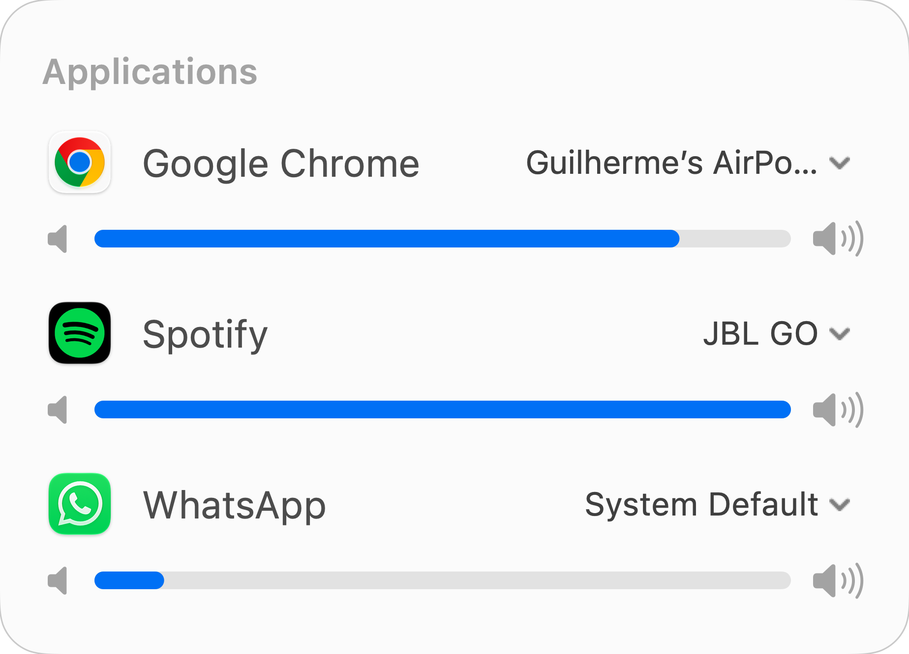
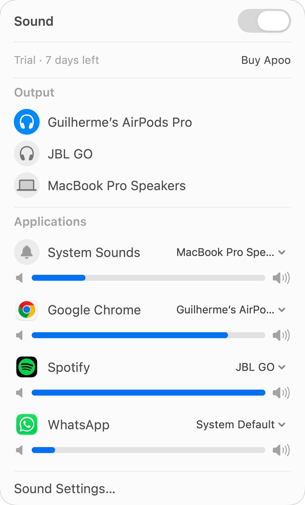
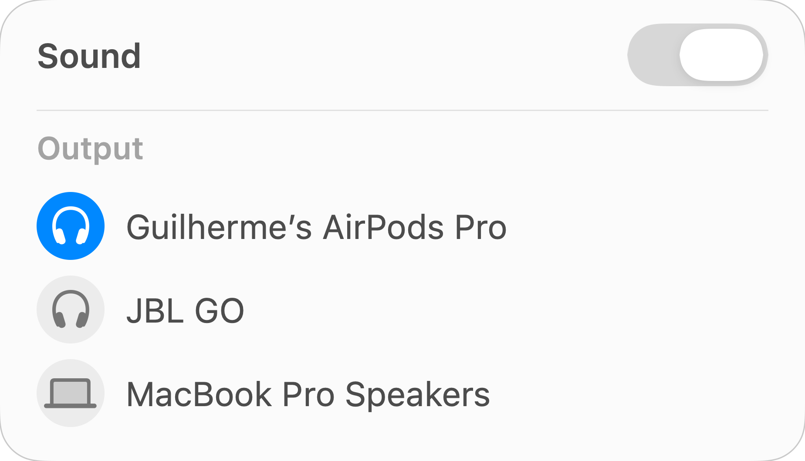
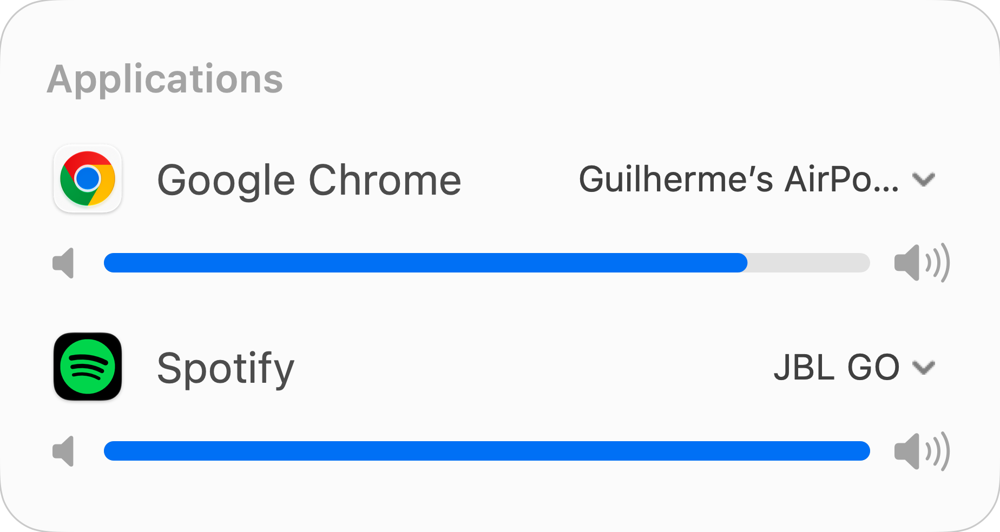
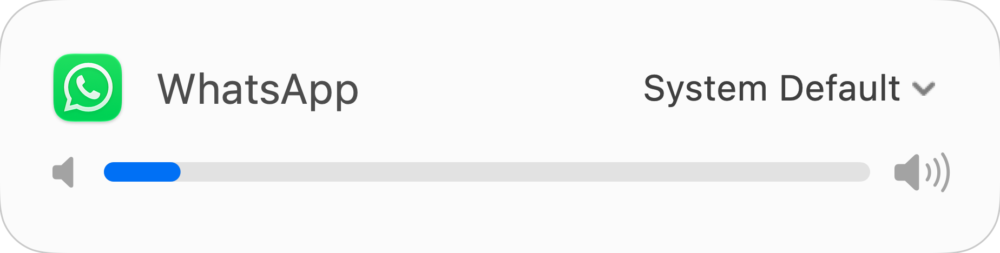

Volume
Turn one down.
Keep the rest.
Adjust each app independently. Your game, your music and your call can each have their own level.

Per-app volume, mute and audio output.
Right in your Mac’s menu bar.

Native controls. Liquid Glass. A compact panel that follows your Mac’s appearance.

Keep Spotify on your speaker. Send your call to your headphones. Choose an output for each app, or follow the system default.

Adjust each app independently. Your game, your music and your call can each have their own level.

Click an app’s icon to mute it. Click again to bring it back.

Apoo processes audio locally. It doesn’t save or upload your sound, and it doesn’t need an extra audio driver.
Open Apoo from your menu bar, enable Sound and allow system-audio access when macOS asks. Start playing audio in an app, then adjust its controls.
Apoo requires macOS 26 or later and permission to access system audio.
Apoo controls apps. Browser audio is controlled as an app, rather than as separate tabs.
Apoo is a stereo mixer. Protected media and apps with exclusive audio-device access may not support interception.
Apoo is an independent app by the Galambas twins, built with native macOS controls.